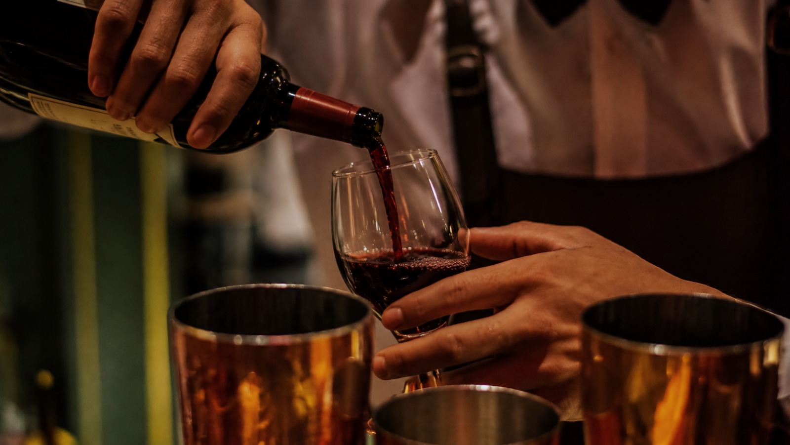
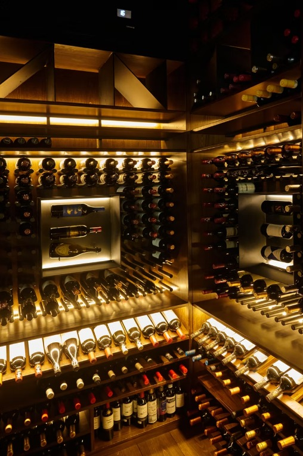

CAVA/BAR

Nuestra carta de bebidas está seleccionada con los mejores licores entre ron, whisky, vodka, tequila, gin, pisco, entre otros.
Los mejores vinos tintos Australianos, Estadounidenses, Franceses, Italianos, Españoles, Chilenos, Argentinos, Uruguayos y Peruanos reposan en nuestra cava manteniéndolos a temperatura ideal para cualquier ocasión.
Para los diferentes gustos también contamos con diferentes bebidas entre vino blanco, espumantes y champagnes.
NUESTRA CARTA DE VINOS

Selección Clásica
Un vino elegante, de aroma intenso y sabor equilibrado. Ideal para una ocasión especial.

Selección Premium
Un vino robusto y complejo, con aromas intensos y un cuerpo lleno. Perfecto para degustar en compañía.

Selección Especial
Un vino excepcional, con una complejidad única y un final persistente. Ideal para momentos memorables.

